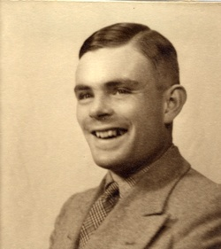

Biography
Alan Turing, born in 1912, was a British mathematician, logician, and cryptographer. He is best known for his pivotal role in breaking the Enigma code during World War II and for laying the foundations of modern computing with his concept of the Turing Machine.
Turing was one of the most influential figures in the history of computer science. His theoretical work on algorithms and computation underpins much of the modern computing theory we rely on today. His contributions to breaking the German Enigma code were critical to the Allied victory in WWII. Despite his achievements, Turing faced persecution for his homosexuality, which led to his tragic and untimely death in 1954.
Alan Turing's legacy continues to inspire the fields of artificial intelligence, cryptography, and computer science. In recent years, he has been recognized as one of the most important figures of the 20th century, with his contributions shaping the world in ways he could not have imagined.
| Attribute | Details |
|---|---|
| Born | June 23, 1912 |
| Known For | Breaking the Enigma Code, Turing Machine |
| Died | June 7, 1954 |